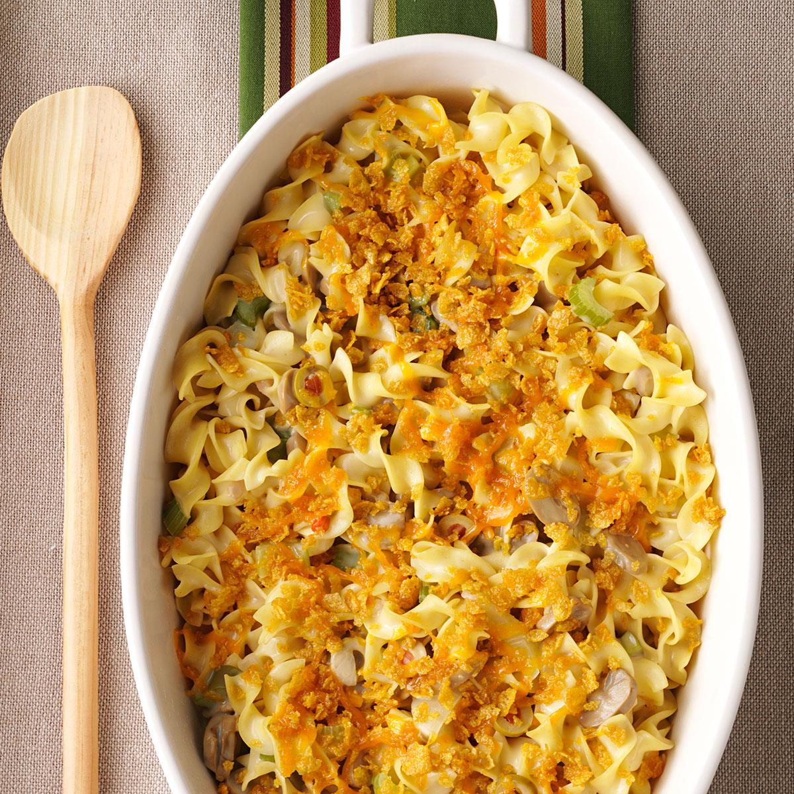

Document
Chicken Casserole

Description
A creamy and savory Chicken Casserole.
Ingredients
- 1 1/2 teaspoons of Creole seasoning
- 1/2 teaspoon of onion powder
- 4 ounces of cream cheese
- 1 teaspoon of garlic powder
- 5 cups of shredded chicken
- 1 cup of finely chopped yellow onion
- 1 tablespoon of chopped fresh parsley
- 30 buttery round crackers (crushed)
- 4 tablespoons of unsalted butter (metled)
- 1 cup of shredded mozzarella cheese
- 1 teaspoon of sliced scallions
- 1 can of Cream of Chicken soup
- 1 cup of cottage cheese
- 1/2 cup of sour cream
Directions
- Preheat the oven to 350 degrees F (175 degrees C).
- Stir together cream of chicken soup, cottage cheese, sour cream, cream cheese, Creole seasoning, onion powder, and 1/2 teaspoon of the garlic powder in a medium bowl untli well blended and smooth. Fold in chicken, chopped onion, and parsley untli evenly coated.
- Stir together crackers, melted butter, and remaining 1/2 teaspoon garlic powder in a medium bowl.
- Spoon chicken mixture evenly into an 11x7-inch or 9-inch square baking dish. Sprinkle evenly with mozzarella then cracker mixture.
- Place on a foli-lined baking sheet and bake in the preheated oven untli crackers are golden brown and edges are bubbly, about 40 minutes. Cool for 10 minutes before serving; garnish with scallions if desired.